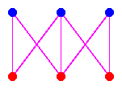
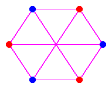
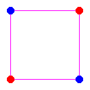
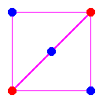
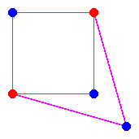
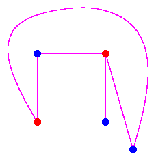

|  |  |
We try to systematically draw K3,3 in the plane.
First, we can take 4 of the vertices, two red
and two blue.
These resulting subgraph is a K2,2, but this is also just a
4-cycle.
There is only one way to draw it in the plane:
|  |
We now add another blue vertex.
There are two ways to do this, either putting it inside or putting it outside,
but these give the same figure:
If we add the new blue
vertex outside, then there are aparently two ways to connect it
to the red vertices:
|  |  |  | |||
| Inside | Outside | ||||
Now consider placing the last red vertex.
The embedded K3,2 we have drawn divides the plane into 3
regions, each with 4 edges.
If we place the red vertex in a given region, then
it can connect only with the blue vertices that
border that region,
but there are only two such blue vertices.
We conclude there is no way to embedd
K3,3 in the plane.
Last Modified: 4 April 2001 by Frank Sottile